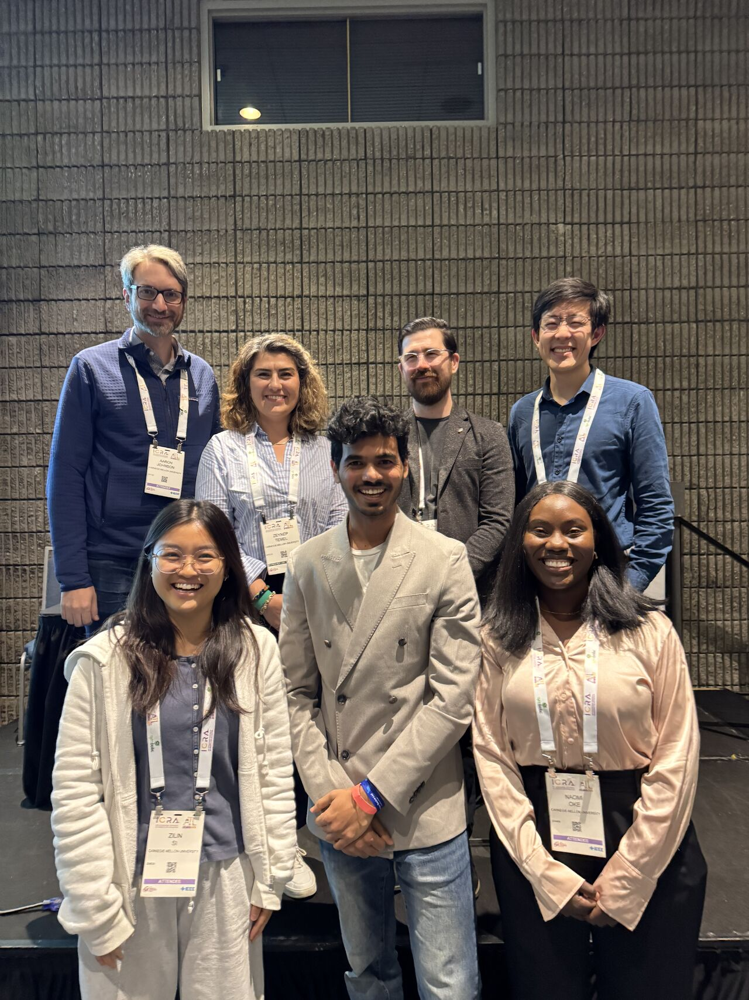
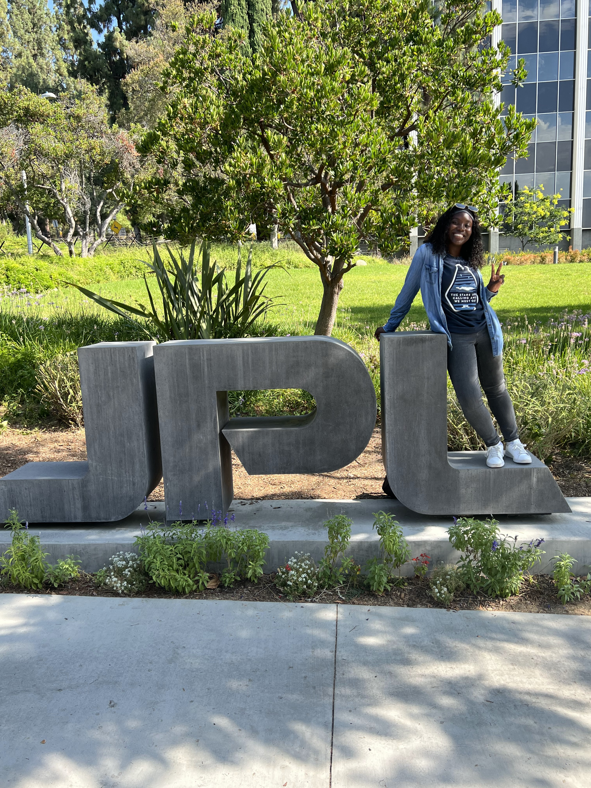
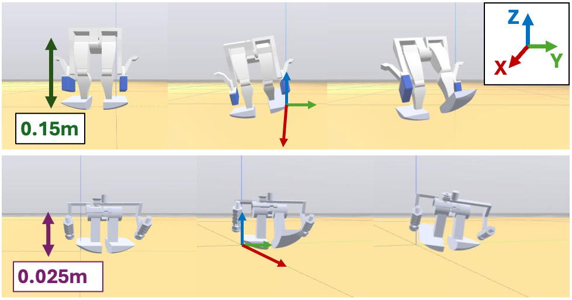

I'm a Ph.D. candidate in Mechanical Engineering at Carnegie Mellon University (CMU), working in the Robomechanics Lab. My work includes legged robot design optimization, co-design, bio-inspired robotics, robot mobility, legged robotics for space environments, and legged robot dynamics across length scales.

About me
I'm a third-year Ph.D. candidate in Mechanical Engineering at Carnegie Mellon University (CMU), working in the Robomechanics Lab. My work includes bipedal walking, quadrupedal locomotion over compliant terrain, mobility in space environments, and allometric scaling laws for robotic locomotion.
I earned my B.S.E. from Princeton University in Mechanical and Aerospace Engineering, with a certificate in Robotics and Intelligent Systems. Since then, I have designed flight hardware at SpaceX, organized qualification testing for NASA's Mars Sample Return mission at JPL, and served as a temporary mechanical design lead for a lunar rover.
Away from the lab, I enjoy creative writing, hand-drawn 2D animation, learning languages, hiking, and photography.
Education
Ph.D., Mechanical Engineering
Design optimization, legged locomotion, and bipedal dynamics across length scales.
M.S., Mechanical Engineering
Design optimization, legged locomotion, and bipedal dynamics across length scales.
B.S.E., Mechanical and Aerospace Engineering
Certificate in Robotics and Intelligent Systems. Research in the IRoM Lab and BAMLab.
Research interests
- Legged locomotion and mobility
- Allometric scaling, design rules
- Passive dynamic walking, hip-actuated walkers
- Bio-inspired design, paleo-inspired design
- Evolutionary robotics, embodied co-design, design optimization
- High-fidelity 3D simulation, reinforcement learning
- Legged robot design for space





Experience
Selected industry and research roles
CMU Robomechanics Lab
Leading research on bipedal walkers, allometric scaling laws, legged mobility in space, and co-design for legged robot mobility. Built digital twins in Drake and MuJoCo, developed and verified hardware of simulation-optimized robots, developed framework for evolutionary-based co-design, and mentor students while running STEM outreach for students in Pittsburgh.
CMU MoonRanger
Temporary mechanical design lead for MoonRanger, the next step for IRIS the first rover to autonomously search for subsurface water ice at the lunar South Pole. Designed a camera shroud to interface with the rover chassis in SolidWorks, fabricated test fixtures, and ran FEA to verify stiffness and natural-frequency targets.
NASA JPL
Organized 13 qualification experiments for a mission-critical harness on the Spacecraft Mechanical Engineering team. Designed fixturing in Siemens NX, facilitated supplier meetings, and conducted tolerance stack-up analysis.
SpaceX Starlink
Redesigned flight power and data harnesses for next-generation satellites in Siemens NX. Mapped signaling, calculated power losses and thermal derating, tested cold-temperature flexibility, and reduced harness costs by over $2 million.
SpaceX Starship
Created conops for aft flap installation on S20+ vehicles, planned hydraulics and propulsion installation, developed a pneumatic vibrator prototype for FOD removal, and designed laser-cut parts in Siemens NX.
Princeton BAMLab
Studied the kinematics of the flying-fish pectoral fin actuation system and applied the insights to a modular flying-fish robot.
Princeton IRoM Lab
Simulated a trash-collecting Jackal robot with ROS and iGibson.
NASA Johnson Space Center
Designed a crewed Mars mission for 7 to 14 astronauts, covering habitat, water recycling, and cost analysis, and presented the work at Johnson Space Center.
Awards
Milton Shaw Ph.D. Research Award in Robotics
Carnegie Mellon University
GE Women's Network Scholarship
General Electric
SWE Scholarship Recipient
Society of Women Engineers
Publications and presentations
Selected publications and presentations. An asterisk (*) marks equal contribution.
When to Waddle: A Comparative Study of Bipedal Torso-Stabilization on Low-Friction Surfaces
Submitted to IEEE. arXiv:2609.21185
Allometric Scaling Laws for Bipedal Robots
Submitted to IEEE. arXiv:2603.22560
BigFoot: Scaling a Single-Actuator Dynamic Walker from Centimeters to a Meter
Submitted.
Tiny Legs or Tiny Wheels? Comparing Locomotion Morphologies for 100 mg Quadrupeds Using Real-to-Sim System Identification
IEEE International Conference on Intelligent Robots and Systems (IROS), 2026
Pengu: A Bipedal Robot for Low-Friction Mobility
Miniature Multiterrain and Multimodal Locomotion: from Biology to Robotics Workshop, IEEE IROS 2026
A Penguin-Inspired Bipedal Robot for Low-Friction Surface Walking
Multi-modal Robotics for Sustainable Environmental Sensing Workshop, IEEE ICRA 2026
Darwinian Morpho-Locomotion Co-Design (DMLC): Concurrent Evolution with Lifetime Learning
Learning-based Robot Co-design: Generative and Iterative Approaches Workshop, IEEE IROS 2026
Gravity as an Evolutionary Design Pressure for Legged Robot Mobility
Space Exploration and Sustained Operations Beyond Earth Workshop, IEEE IROS 2026
Embodied Evolutionary Co-Design of Legged Robot Morphology and Gait
MESH RCN Meeting 2026
Allometric Scaling Laws in Bipedal Robot Design
Gordon Research Seminar and Conference on Robotics, 2026
Zippy: The Smallest Power-Autonomous Bipedal Robot
IEEE International Conference on Robotics and Automation (ICRA), 2025
Projects
Selected engineering projects across robotics, controls, machine learning, and aerospace.
Robotics and controls

Penguin-Inspired Bipedal Robot for Low-Friction Surface Walking
Led end-to-end design and build of a penguin-inspired bipedal robot with six rigid bodies and five Dynamixel-actuated joints. The robot uses prismatic leg extension and ellipsoidal feet with non-concentric curvature centers for passive lateral stability. Developed MuJoCo-based design optimization for body dimensions, implemented open-loop sinusoidal control, and trained PPO for comparison. Reached 0.165 m/s on low-friction surfaces, showing that morphological design improves locomotion robustness. Validated on flat ground, rough terrain, slippery surfaces, and slopes with three undergraduate mentees.

Allometric Scaling Laws for Bipedal Robots
Analyzed hip-actuated bipedal walkers across scales to derive allometric scaling laws for robotic locomotion. Created digital twins of three robotic systems in Drake and MuJoCo for walking and morphology trade studies. Implemented sinusoidal and PID-based hip control across scales, optimizing leg length, foot curvature, mass distribution, and actuation parameters. Analyzed COM motion, stability metrics, torque requirements, and gait performance across scale sweeps. Led design of a 1-meter hip-actuated quasi-passive dynamic walker, and contributed to the Zippy platform, the smallest self-contained bipedal robot (3.6 cm) at 10 leg-lengths per second.

EKF-SLAM for Mobile Robots
Implemented Extended Kalman Filter SLAM for simultaneous localization and mapping on a mobile robot in the Webots simulator. Built a full state estimation pipeline with prediction and update steps and landmark association, handling unknown correspondence between observations and map features.
LQR Trajectory Tracking
Designed and tuned Linear Quadratic Regulator controllers for optimal trajectory tracking on mobile robot platforms. Derived linearized system dynamics around reference trajectories and computed optimal feedback gains via the discrete algebraic Riccati equation for minimum-cost control in Webots.
Model Predictive Control
Implemented Model Predictive Control for constrained path planning with obstacle avoidance on a mobile robot. Formulated receding-horizon quadratic programs accounting for input constraints, state bounds, and dynamic feasibility, solving at each timestep to generate a control trajectory.

Mole Digging Robot with Magnetic Localization and Mapping
Group project developing a mole-inspired digging robot with onboard magnetic localization and mapping.
Machine and deep learning

GAN for Handwritten Digit Generation
Trained a Generative Adversarial Network from scratch in PyTorch to generate realistic MNIST-style digits. Implemented generator and discriminator architectures with batch normalization and training-stabilization techniques, producing realistic samples by iteration 70,000.

VAE for Airfoil Shape Generation
Built a Variational Autoencoder to learn a continuous latent representation of airfoil geometries from an engineering dataset. Sampled from the learned Gaussian distribution to generate novel, physically plausible airfoil profiles for design exploration.
CNN Image Classification
Designed convolutional neural networks for image classification from scratch in PyTorch. Implemented batch normalization, dropout regularization, data augmentation, and residual skip connections to improve generalization.

Topology Optimization with ML
Applied machine learning to structural topology optimization. Trained models to predict optimal material distributions under various loading conditions, using stress-field visualizations to evaluate structural performance across candidate geometries.
SVM and Decision Tree Classification
Implemented support vector machines with linear, polynomial, and RBF kernels alongside decision tree classifiers. Compared one-vs-one and one-vs-rest multi-class strategies, analyzing margins, decision boundaries, and generalization. Applied PCA for dimensionality reduction, feature scaling, log transforms for skewed distributions, and K-means clustering for pattern discovery in high-dimensional data.
Aerospace
Lagrange Point Mission Design
Designed a complete space mission trajectory and operations plan for a Lagrange point destination, including orbital transfer calculations, delta-v budgets, and a mission timeline.
View
Detonation Engine System
Group project exploring the design and feasibility of a reusable rotating detonation engine for next-generation aerospace propulsion, analyzing thermodynamic cycles and structural requirements.
View
Mars Habitat and Mission Design
Designed a crewed Mars trip for 7 to 14 astronauts alongside NASA scientists and UT Austin faculty. Led habitat design, 3D modeling, cost estimates, water recycling, and the repair and emergency module. Presented findings at NASA Johnson Space Center.
View
Airfoil Design Project
Design and analysis of an airfoil, covering geometry, aerodynamic performance, and design trade-offs.
ViewBoundary Layer Analysis Project
Analysis of boundary-layer behavior in fluid flow.
ViewOrbital Mechanics and the Van Allen Radiation Belts
A study of orbital mechanics and the Van Allen radiation belts.
ViewMechanical and design

Hydrocar Technology Analysis
A technology analysis of the Hydrocar hydrogen fuel-cell platform.
View
Solar Cooker Design Project
Group project designing a solar cooker.
View
Engineering Design Course Side Projects
A collection of side projects from an engineering design course.
View
Bio-Inspired Mobility Aid
Group project designing a bio-inspired mobility aid.
View
Bio-Inspired Deployable Flying-Fish Pectoral Fins
Design and evaluation of bio-inspired deployable flying-fish pectoral fins.
ViewCoursework
Graduate coursework at Carnegie Mellon and undergraduate coursework at Princeton.
Robotics and Controls
- Robot Design and Experimentation 24-775, CMU
- Robot Dynamics and Analysis 24-760, CMU
- Modern Control Theory 24-677, CMU
- Automatic Control Systems MAE 433, Princeton
AI and Machine Learning
- AI and Machine Learning for Engineers 24-787, CMU
- Introduction to Deep Learning 24-788, CMU
- Intermediate Deep Learning 24-789, CMU
Mechanical and Structural
- Thermodynamics MAE 221, Princeton
- Modern Solid Mechanics MAE 223, Princeton
- Engineering Dynamics MAE 206, Princeton
- Mechanics of Fluids MAE 222, Princeton
- Structure and Properties of Materials MAE 324, Princeton
- Statics of Structures CEE 312, Princeton
- Engineering Design MAE 321, Princeton
- Bioinspired Design MAE 416, Princeton
Aerospace
- Fluid Dynamics MAE 335, Princeton
- Space Flight: Orbital Mechanics MAE 341, Princeton
- Space System Design MAE 342, Princeton
- Space Robotics 16-865, CMU
- Rocket and Air-Breathing Propulsion MAE 426, Princeton
Other coursework
- Engineering a Startup 24-692, CMU
- Professional Development for PhD Students 24-991, CMU
- Project Management 24-691, CMU
- Human Factors 2.0-Psychology for Engineering, Energy, and Environmental Decisions ENE/PSY 475, Princeton
- Fundamentals of Statistics ORF 245, Princeton
- Astronomy: The Universe AST 203, Princeton
- Digital Animation VIS 220, Princeton
- Film and Media: Animation ENG 259, Princeton
- Creative Writing: Fiction CWR 204, Princeton
- Creative Writing: Poetry CWR 202, Princeton
- Fundamentals of Neuroscience NEU 201, Princeton
- American Sign Language LIN 205, Princeton
Community and outreach
Workshops I organize, student groups I have served, and students I mentor.
Leadership and service
Unconventional Robots Workshop
Co-organized the 2nd (ICRA 2025, Atlanta) and 3rd (ICRA 2026, Vienna) editions. The full-day workshop covers novel mechanism design, modeling, simulation, and control.
Women of Aeronautics and Astronautics
Co-founded the Princeton chapter of WoAA (2020 to 2023), building a community for women in aerospace.
National Society of Black Engineers
Vice President, Alumni Engagement Chair, and Chapter Historian for NSBE Princeton (2020 to 2022).
African Students Association
Rose from Treasurer to Events Chair to Co-President (2020 to 2022), organizing cultural and academic programming.
Council on Science and Technology
Student Advisory Board Member (2020 to 2021), advising on science education and interdisciplinary programming.
Black Talent Pipeline Initiative
Connected Black students with career opportunities and alumni mentors (2020 to 2021).
Teaching and outreach
Students I have mentored
Bennett Matthews
B.S. MechE, CMU, 2026 to presentNicholas Chung
B.S. MechE, CMU, 2026 to presentSerge Douge
B.S. MechE, CMU, 2025 to presentRicky Castro
B.S. MechE, CMU, 2025 to presentNicole Ortuno
B.S. MechE, CMU, 2025 to presentJames Shin
B.S. MechE, CMU, 2025 to presentChris Keefe
B.S. MechE, CMU, 2025 to 2026Hopewell Feldmann
B.S. MechE, CMU, 2025Cordelia Pride
B.S. MechE, CMU, 2024 to presentBen Gu
M.S. RI, CMU, 2024 to presentCatherine Or
B.S. MechE, CMU, 2024 to 2025Kendall Hart
B.S. MechE, CMU, 2024 to 2025Professional memberships
- Institute of Electrical and Electronics Engineers (IEEE)
- American Society of Mechanical Engineers (ASME)
- American Institute of Aeronautics and Astronautics (AIAA)
- Society of Women Engineers (SWE)
- National Society of Black Engineers (NSBE)
- Women of Aeronautics and Astronautics (WoAA)
- Sigma Xi, The Scientific Research Honor Society
Contact
I'm happy to talk about robotics research or collaboration. Email is the best way to reach me.
- Emailnoke@andrew.cmu.edu
- LinkedInnaomi-oke-url
- Google ScholarScholar profile
- Twitter / X@oke_naomi